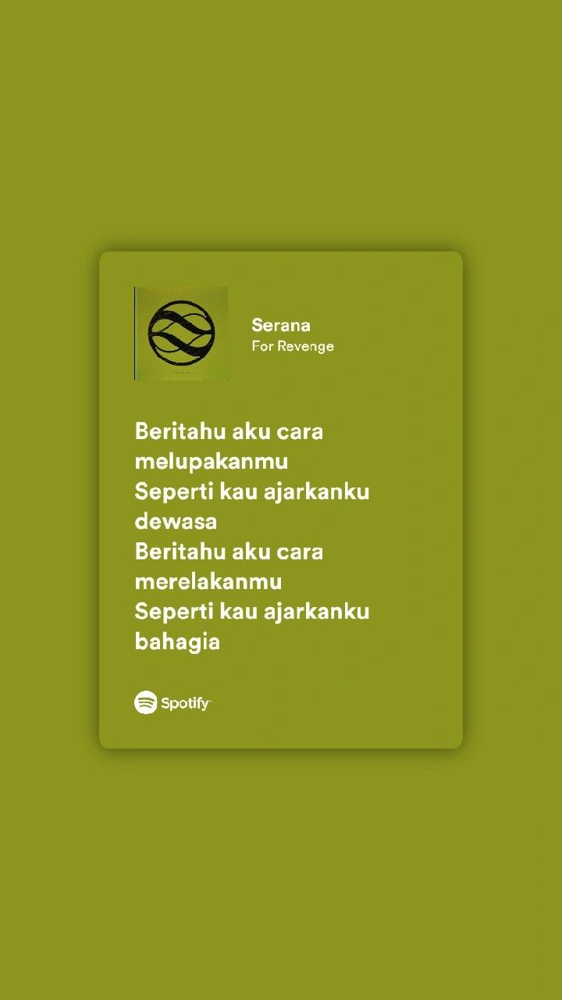

"Serana" bukanlah sekadar lagu patah hati; ia merupakan refleksi yang menyayat hati tentang kehilangan, penyesalan, dan pentingnya kesadaran akan kesehatan mental. Melalui lirik yang puitis dan aransemen musik yang melankolis, lagu ini berhasil menyampaikan pesan yang kuat dan berkesan, meninggalkan pendengar dengan perasaan sedih sekaligus merenung. Lagu ini juga dapat diinterpretasikan sebagai panggilan untuk lebih peka terhadap orang-orang di sekitar dan tidak menyepelekan isu kesehatan mental. Popularitasnya di media sosial semakin memperkuat dampak dan jangkauan pesan yang ingin disampaikan oleh For Revenge.